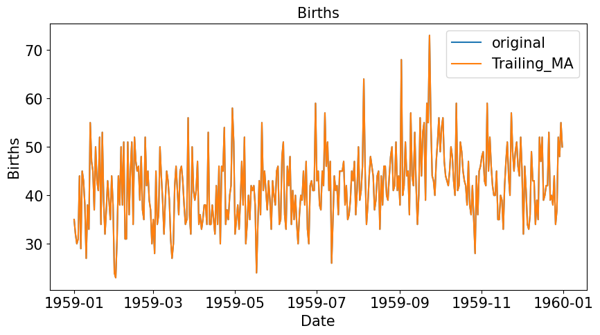
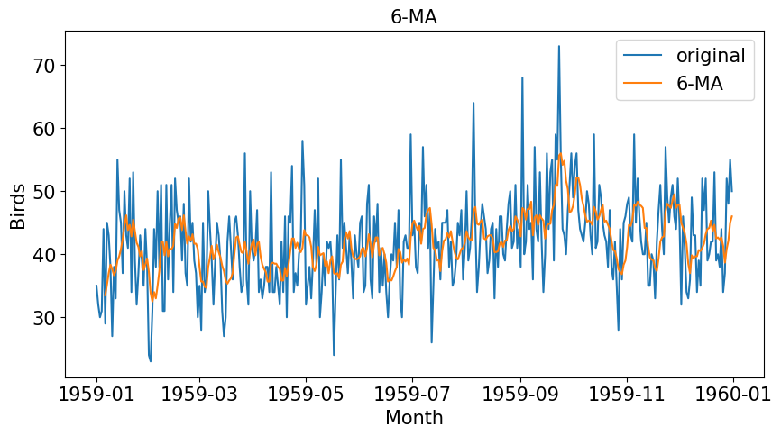
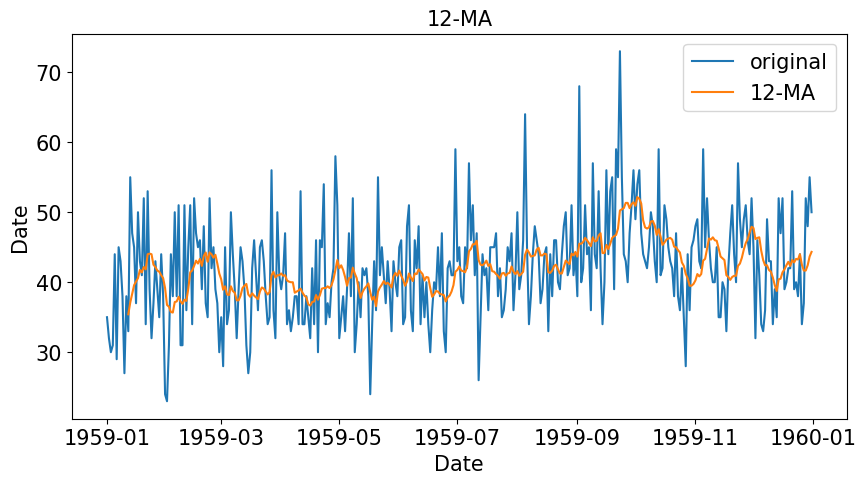
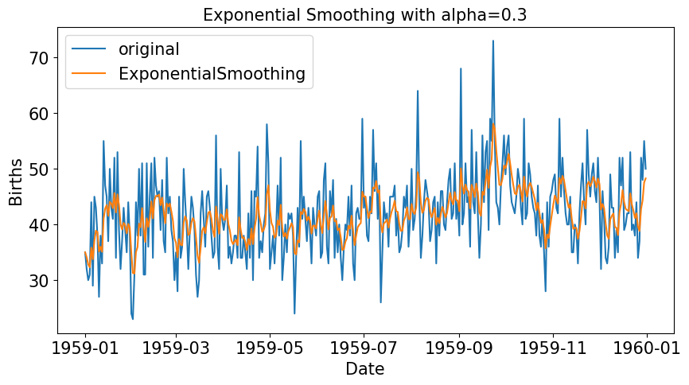

Chương 2 Stationarity và Time Series Smoothing
2.2 Smoothing
Kỹ thuật làm mịn là một trong các kỹ thuật tiền xử lý dữ liệu để loại bỏ các nhiễu trong dữ liệu. Việc làm mịn dữ liệu giúp xóa bỏ mùa vụ của dữ liệu và giúp đơn giản hóa các mô hình dự đoán.
Các kỹ thuật làm mịn dữ liệu bao gồm:
- Làm mịn trung bình trượt (Moving Average Smoothing)
- Làm mịn cấp số nhân (Exponential Smoothing)
2.2.1 Moving Average Smoothing
Có 2 loại trung bình trượt : Centered MA và Trailing MA
2.2.1.1 Centered Moving Average
Với trung bình trượt với cửa sổ trượt \(k\) bằng 3 ta có:
\[\begin{aligned} \Large s_{t} = \frac{y_{t+1} + y_{t} + y_{t-1}}{3} \end{aligned}\]
Tổng quát hơn
\[\begin{aligned} \Large s_{t} = \frac{1}{k} \sum_{j=-m}^{m}{y_{t+j}} \end{aligned}\]
Trong đó \(k = 2m + 1\)
Phương pháp này sử dụng giá trị tương lai \(y_{t+1}\) do đó không áp dụng được vào các mô hình dự báo. Phương pháp dùng để thống kê mô tả dữ liệu
2.2.1.2 Trailing Moving Average
Với trung bình trượt với cửa sổ trượt \(k\) bằng 3 ta có
\[\begin{aligned} \Large s_{t} = \frac{y_{t} + y_{t - 1} + y_{t - 2}}{3} \end{aligned}\]
Tổng quát hơn
\[\begin{aligned} \Large s_{t} = \frac{1}{k} \sum^{k}_{i=1}{y_{t-i+1}} \end{aligned}\]
Phương pháp này chỉ sử dụng dữ liệu quá khứ nên có thể áp dụng cho việc dự báo các giá trị tương lai
2.2.1.3 Ví dụ
Dưới đây là ví dụ về số bé gái sinh ra mỗi ngày
df = pd.read_csv('../data/daily-total-female-births.csv')
df['Date'] = pd.to_datetime(df['Date'])
df['lag_1'] = df['Births'].shift(1)
df['lag_2'] = df['Births'].shift(2)
df['lead_1'] = df['Births'].shift(-1)
df['Centered_MA'] = (df['Births'] + df['lead_1'] + df['lag_1'])/3
df['Trailing_MA'] = (df['Births'] + df['lag_1'] + df['lag_2'])/3 Date Births lag_1 lag_2 lead_1 Centered_MA Trailing_MA
0 1959-01-01 35 NaN NaN 32.0 NaN NaN
1 1959-01-02 32 35.0 NaN 30.0 32.333333 NaN
2 1959-01-03 30 32.0 35.0 31.0 31.000000 32.333333
3 1959-01-04 31 30.0 32.0 44.0 35.000000 31.000000
4 1959-01-05 44 31.0 30.0 29.0 34.666667 35.000000
... ... ... ... ... ... ... ...
360 1959-12-27 37 34.0 44.0 52.0 41.000000 38.333333
361 1959-12-28 52 37.0 34.0 48.0 45.666667 41.000000
362 1959-12-29 48 52.0 37.0 55.0 51.666667 45.666667
363 1959-12-30 55 48.0 52.0 50.0 51.000000 51.666667
364 1959-12-31 50 55.0 48.0 NaN NaN 51.000000Ta cũng có thể sử dụng phương thức rolling() trong Pandas
df['Centered_MA'] = df['Births'].rolling(window=3, center=True).mean()
df['Trailing_MA'] = df['Births'].rolling(window=3, center=False).mean()Để visualize dữ liệu, ta có thể dùng seaborn
import seaborn as sns
import matplotlib.pyplot as plt
plt.figure(figsize=(10,5))
plt.title("Births", fontsize=15)
sns.lineplot(x='Date', y='Births', data=df, label='original')
# sns.lineplot(x='Month', y='Centered_MA', data=df, label='Centered_MA')
sns.lineplot(x='Date', y='Births', data=df, label='Trailing_MA')
plt.xlabel('Date',fontsize=15)
plt.yticks(fontsize=15)
plt.ylabel('Births',fontsize=15)
plt.legend(fontsize=15)
với các tham số \(k =6\) và \(k=12\)
fig1 = plt.figure(figsize=(10,5))
df['Births_MA'] = df['Births'].rolling(window=6, center=False).mean()
sns.lineplot(x='Date', y='Births', data=df, label='original')
sns.lineplot(x='Date', y='Births_MA', data=df, label='6-MA')
plt.xlabel('Month',fontsize=15)
plt.xticks(fontsize=15)
plt.yticks(fontsize=15)
plt.ylabel('Birds',fontsize=15)
plt.legend(fontsize=15)
plt.title('6-MA', fontsize=15)
fig2 = plt.figure(figsize=(10,5))
df['Births_MA'] = df['Births'].rolling(window=12, center=False).mean()
sns.lineplot(x='Date', y='Births', data=df, label='original')
sns.lineplot(x='Date', y='Births_MA', data=df, label='12-MA')
plt.xlabel('Date',fontsize=15)
plt.xticks(fontsize=15)
plt.yticks(fontsize=15)
plt.ylabel('Date',fontsize=15)
plt.legend(fontsize=15)
plt.title('12-MA', fontsize=15)
2.2.2 Exponential Smoothing
Hàm làm mịn Exponential là một hàm làm mịn sử dụng hàm mũ. Trong khi các hàm Moving Average đơn giản sử dụng các giá trị quá khứ với trọng số bằng nhau thì hàm Exponential sử dụng hàm số mũ cho trọng số đảm bảo giảm dần theo thời gian.
2.2.2.1 Simple Exponential Smoothing
Hàm làm mịn Exponential thường áp dụng vào xử lý tín hiệu số để lọc những nhiễu có tầm số cao. Hàm này là dạy truy hồi với công thức như sau
\(s_{0} = y_{0}\)
\(s_{t} = \alpha y_{t} + (1 - \alpha)s_{t-1}, t > 0\)
Trong đó \(\alpha\) được gọi là tham số smoothing và \(0 < \alpha < 1\)
Tại sao lại gọi là Hàm mũ
Với công thức Truy hồi trên ta có thể biến đổi như sau
\(s_t = \alpha y_t + (1 - \alpha)s_{t-1}\)
\(s_t = \alpha y_t + (1 - \alpha)(\alpha y_{t-1} + (1 - \alpha)s_{t-2})\)
\(s_t = \alpha y_t + \alpha(1 - \alpha)y_{t-1} + (1-\alpha)^2s_{t-2}\)
\(s_t = \alpha[y_t + (1 - \alpha)y_{t-1} + (1-\alpha)^2y_{t-2} + (1-\alpha)^3y_{t-3} + ... +(1-\alpha)^Ty_0]\)
Ta có thể thấy \(s_t\) có liên quan đến trung bình các giá trị với các trọng số \(1, (1-\alpha), (1-\alpha)^2, ....,(1-\alpha)^T\)
Dưới đây là code mẫu cho cách tính Exponential Smoothing
def exponential_smoothing(Y, alpha):
S = np.zeros(Y.shape[0])
S[0] = Y[0]
for t in range(1, Y.shape[0]):
S[t] = alpha * Y[t] + (1- alpha) * S[t-1]
return SHoặc chúng ta cũng có thể sử dụng phương thức ewm của Pandas hoặc Class SimpleExpSmoothing của thư viện statsmodel.tsa
from statsmodels.api import tsa
## dùng pandas
df['ExponentialSmoothing_PANDAS'] = df['Births'].ewm(alpha=0.3, adjust=False).mean()
## dùng functions
df['ExponentialSmoothing_FUNCTION'] = exponential_smoothing(df['Births'], 0.3)
## dùng tsa
es = tsa.SimpleExpSmoothing(df['Births'])
df['ExponentialSmoothing_tSA'] = es.predict(es.params, start=1, end=df.shape[0])
df Date Births ExponentialSmoothing_PANDAS ExponentialSmoothing_FUNCTION ExponentialSmoothing_tSA
0 1959-01-01 35 35.000000 35.000000 35.000000
1 1959-01-02 32 34.100000 34.100000 34.100000
2 1959-01-03 30 32.870000 32.870000 32.870000
3 1959-01-04 31 32.309000 32.309000 32.309000
4 1959-01-05 44 35.816300 35.816300 35.816300
... ... ... ... ... ...
360 1959-12-27 37 38.828280 38.828280 38.828280
361 1959-12-28 52 42.779796 42.779796 42.779796
362 1959-12-29 48 44.345857 44.345857 44.345857
363 1959-12-30 55 47.542100 47.542100 47.542100
364 1959-12-31 50 48.279470 48.279470 48.279470Biểu đồ so sánh giữa giá trị gốc và Exponential Smoothing
fig4= plt.figure(figsize=(10,5))
sns.lineplot(x='Date', y='Births', data=df, label='original')
sns.lineplot(x='Date', y='ExponentialSmoothing_PANDAS', data=df, label='ExponentialSmoothing')
plt.xlabel('Date',fontsize=15)
plt.xticks(fontsize=15)
plt.yticks(fontsize=15)
plt.ylabel('Births',fontsize=15)
plt.legend(fontsize=15)
plt.title('Exponential Smoothing with alpha=0.3', fontsize=15)
2.2.3 Whittaker-Eilers Smoothing
https://towardsdatascience.com/the-perfect-way-to-smooth-your-noisy-data-4f3fe6b44440